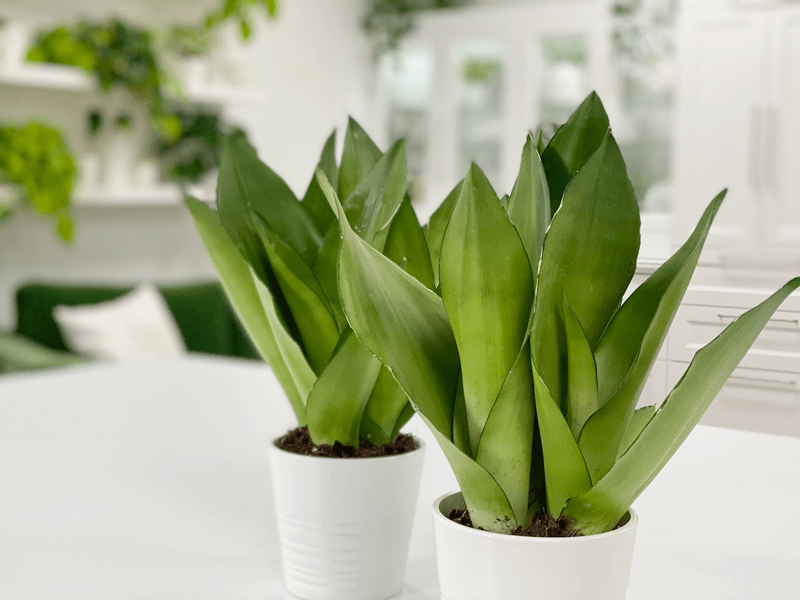
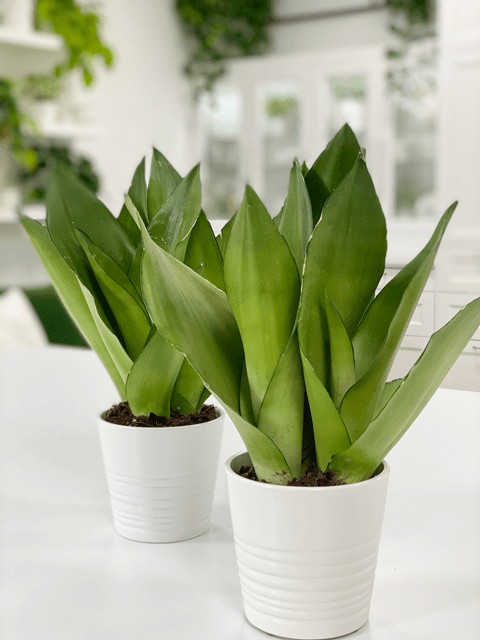

Snake Plant | Sansevieria Moonshine | Care Difficulty – Easy
Looking to add some visual interest to a room? Perhaps you want to create a depth of color amongst your plants? Well, the moonshine snake plant just might be what you are looking for. I love its pale sage-green color. It adds a wonderful contrast up against my other plants. I am also drawn to the flat, paddle-like blades.

I paid $19.99 for 2 of these plants from the Portland Costco store.
The moonshine version of snake plants only grows to roughly six to twelve inches tall, so they are a great plant to tuck in an empty spot. I am all about big plants, but I see the benefit of having some smaller ones to create staggered heights. When I decorate, with or without plants, I love to keep a visual flow throughout the space. It is one of the keys to making a space feel warm and welcoming.
If you work a lot, tend to travel for weeks at a time, or you are a busy parent, snake plants should be high on your list, since they don’t mind a little neglect. They are mildly poisonous if eaten (like most houseplants), so be sure to keep them away from reaching hands or sniffing puppies.
Water Requirements
Easy does it with the watering. You want to be careful not to overdo it, because your plant will rot out. Always make sure the soil is almost completely dry before thoroughly watering again. Size and location depending, you will end up watering your snake plants every 2-6 weeks. If you travel or tend to ignore plants, this is the one for you. But don’t ignore them TOO long; nobody really likes to be ignored, whether human or plant.
Light Requirements
Even though Sansevierias prefer medium light, they’ll also tolerate low light and high light. The main thing you need to watch for is DIRECT sunlight. No houseplant does well in those conditions because the leaves can burn. So, as you can see, this plant gives you many options when it comes to placement.
Temperature Requirements
Sansevierias will tolerate a wide range of temperatures in our homes. They can hang out in temperatures ranging between 55 – 85 degrees (F). Temperatures below 55 degrees (F) can cause them harm.
Fertilizer (plant food)
Snake plants don’t need much fertilizer, but they will grow more if you fertilize them during their growing season in the spring and summer. Use a basic fertilizer for houseplants and only add it every few weeks or every other watering. I use a diluted form of organic Espoma Organic Indoor Plant Food on all my plants.

Soil
I use succulent and cactus mix combined with potting soil in a ratio of 1:1. Snake plants like quick-draining soil, but if the water runs straight through, the roots won’t have time to take up any water. Be sure to plant in a pot that has drainage holes, since snake plants don’t like a soggy bottom (like who does!).
Plant Characteristics to Watch For
Diagnosing what is going wrong with your plant is going to take a little detective work, but even more patience! First of all, don’t panic, and don’t throw a plant out prematurely. Take a few deep breaths and work down the list of possible issues.
Below, I am going to share some typical symptoms that can arise. When I start to spot troubling signs on a plant, I take the plant into a room with good lighting, pull out my magnifiers, and begin by thoroughly inspecting the plant.
My plant isn’t growing
- If you bought it during the fall and winter months, it’s entirely natural for growth to slow down. These are the dormant months when new growth is either completely stopped or extremely slow. However, if you are in the spring and summer months and it’s still not growing, revisit the care that it requires and see if you are up to speed on that.
- Solution: If the plant is receiving adequate water, try moving it to a sunnier location. Even though the moonshine snake plant does well in low light conditions, it will thrive with more light.
Brown tips
- Brown tips can mean a problem with overwatering.
- Solution: Cut back and allow the soil to dry almost completely in between waterings.
Blades are mushy
- Mushy leaves (blades) can be a sure sign of root rot.
- Solution: water less, and repot into fresh soil to allow the roots to dry out. You may also need to cut off any mushy leaves.
The blades are drooping or wrinkling
- The blades of a snake plant can droop when they’ve gotten too much or too little water. A wrinkled appearance is also a sure sign that your plant isn’t getting enough water.
- Solution: Hone in on the water requirements. I let my snake plants dry out, and then I water them in the sink, saturating the soil until it comes through the drain holes. You might also take a moment to look at the soil and root system. I had a snake plant in old compacted soil (came to me that way) and little did I know, the water wasn’t even touching the main roots of the plant. How it survived up until I repotted it is beyond me. But if you feel that under watering isn’t the issue, check to see if you are overwatering. Snake plants done like to sit with a soggy bottom, nobody does.
-

-
Spider mites
-

-
Mealybugs
Common Bugs to Watch For
If you want to have healthy houseplants, you MUST inspect them regularly. Every time I water a plant, I give it a quick look-over. Bugs/insects feeding on your plants reduces the plant sap and redirects nutrients from leaves. Snake plants are highly pest-resistant, but in poor conditions, they can get mealybugs and/or spider mites. The biggest threat is fungal growth due to root rot. If the plant receives too much water or grows in soil with poor drainage, the fungus may start to appear near the base of the plant.
- Mealybugs look like small balls of cotton. They can travel slowly, but they have a strong will and determination! Though their slow movement, if any plant is touching another, there is a chance the mealybug will hitch a ride on a new leaf and spread. They breed like rabbits of the insect world. Females can deposit around 600 eggs in loose cottony masses, often on the underside of leaves or along stems.
- Spider mites are more common on houseplants. They are not insects – they are related to spiders. These appear to be tiny black or red moving dots. Spider mites are nearly invisible to the naked eye. You often need a magnifying lens to spot them, or you may notice a reddish film across the bottom of the leaves, some webbing, or even some leaf damage, which usually results in reddish-brown spots on the leaf.
Toxicity
While the toxicity levels are low, it’s safest to keep pets away from your plant. It can cause excessive salivation, pain, nausea, vomiting, and diarrhea.
© AmieSue.com